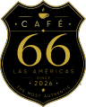
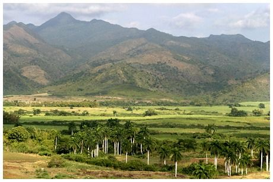
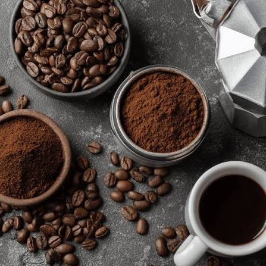
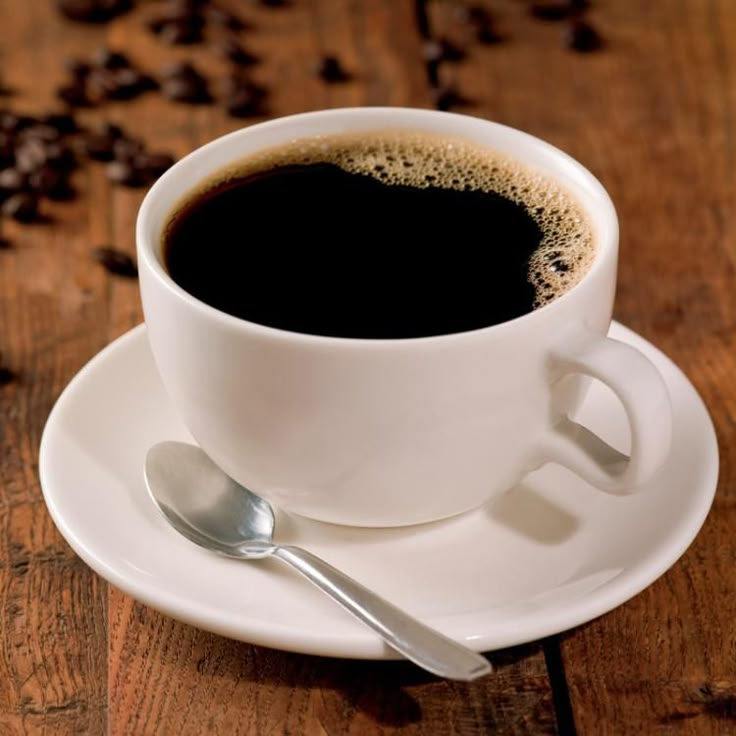
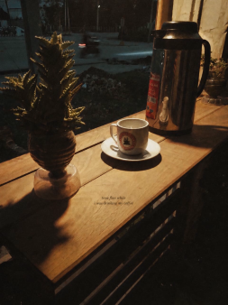
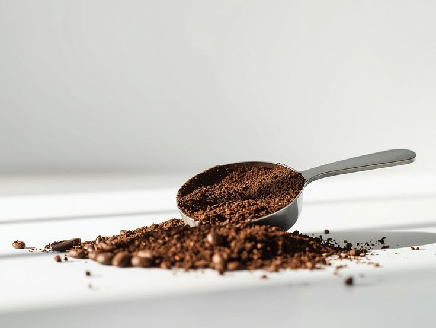

✦ El viaje del cafe

Origen
Nuestros granos provienen de las mejores fincas de altura, seleccionados a mano para garantizar la excelencia.
↳ Tierra
Tostado
El tueste artesanal resalta las notas únicas de cada variedad, con un control preciso de temperatura y tiempo.
↳ Fuego
La taza
El momento final, donde todos los cuidados se unen en una experiencia sensorial inolvidable.
↳ Momento“El café es el aroma de la tierra, el abrazo del fuego y el susurro del tiempo.”

✦ Nuestra historia
Más de 20 años de tradición familiar, perfeccionando el arte del café y creando un espacio donde la comunidad se encuentra.

✦ Filosofía
Creemos en el café como un ritual: cada taza es una pausa, un momento de conexión y un pequeño viaje a los orígenes.
✦ Lo que ofrecemos


✦ Nuestros clientes dicen
✦ Contáctanos
Te esperamos en nuestra mesa
☕ Café 66
Las Americas, 12
Bayamo/Granma
📞+5351654005
✉️ hola@cafe66.es
Horario
Lun–Vie: 8:00 – 22:00
Sáb: 9:00 – 23:00
Dom: 9:00 – 21:00